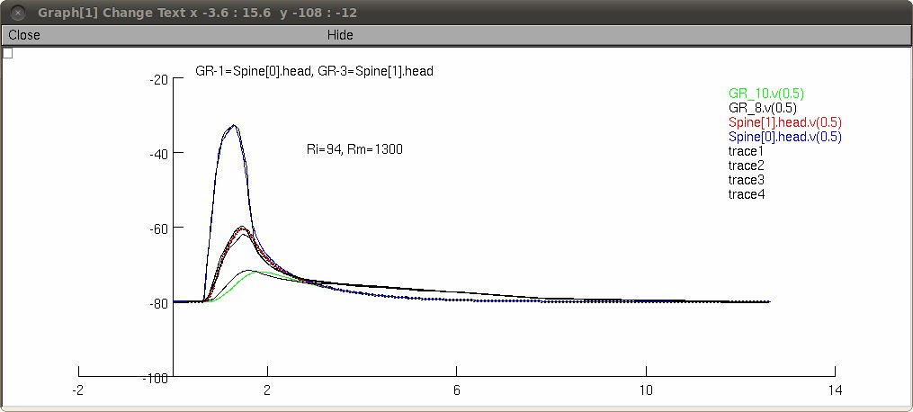
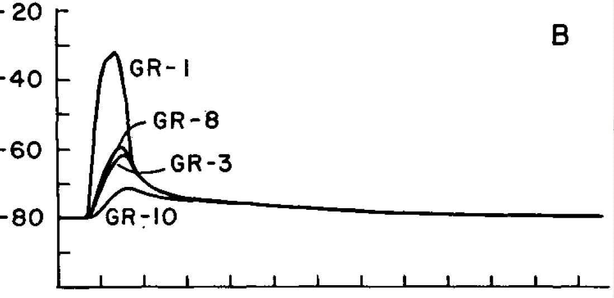

This is the readme for NEURON code developed to reproduce Fig 2B from Shepherd GM, Brayton RK (1979) Computer simulation of a dendrodendritic synaptic circuit for self- and lateral-inhibition in the olfactory bulb. Brain Res 175:377-82 There were typos in Figure 1 (Shepherd, private communication) where the granule cell spine geometry should have been specified as 3 micron length, 1 micron diameter head and 1 micron length and 0.2 micron width neck dimensions. The granule cell compartments were 70 microns in length and 1 micron in diameter. The NEURON models cytoplasmic and membrane resistance, Ri, and Rm, as well as the excitatory synaptic conductance pulse (a trapezoidal pulse) were optimized to the original paper Fig 2B:  The above screenshot includes (black lines) that were the result of using manually traced original curves:  Usage: Auto-launch from ModelDB or download, extract the archive and compile the mod files in the mod directory by either typing "nrnivmodl mod" (linux), running mknrndll and cd'ing to the mod folder (mswin), or dragging and dropping the mod folder onto the mknrndll icon (Mac OS X) Then start with nrngui mosinit.hoc (linux), double clicking the mosinit.hoc file in windows explorer (mswin), or dragging and dropping the mosinit.hoc file on the nrngui icon (Mac OS X). Once the simulation has started you can either 1) optimize to find the Ri, Rm, and conductance pulse trapezoidal shape that matches the paper: On the multiple run fitter window click on Parameters -> Select Optimizer -> Praxis, and then click on the Optimize button in the "MulRunFitter[0] Optimize" box. After a short time praxis will find the Ri ~ 90 and Rm ~ 1300. 2) or use a previously saved Multiple Run Fitter session to see the result of optimizing. Close the MulRunFitter[0] main window and select from the NEURON main menu: File -> load session file, and then using the popped up file picker, browse to the mrf folder and select mrf5.ses, which contains the result of a previous optimization. Now you can press the ErrorValue button on the newly opened MulRunFitter window to generate a run. The graphs will be refreshed with optimized voltage trajectories. For questions, please contact Tom.Morse at yale.edu.